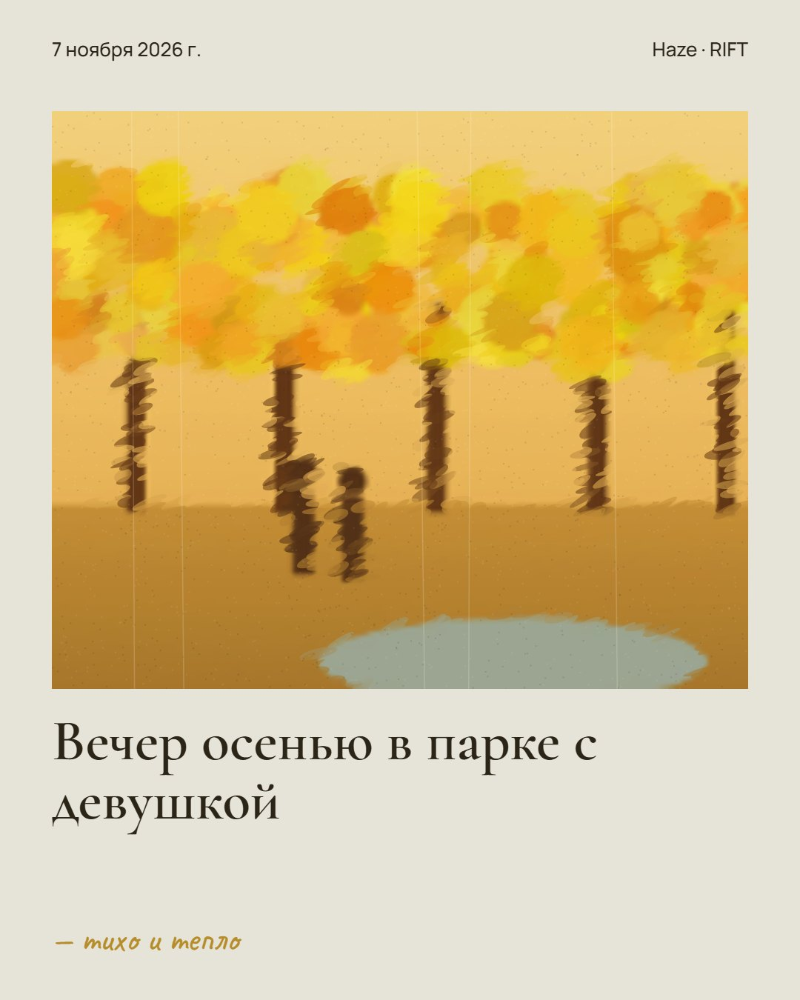
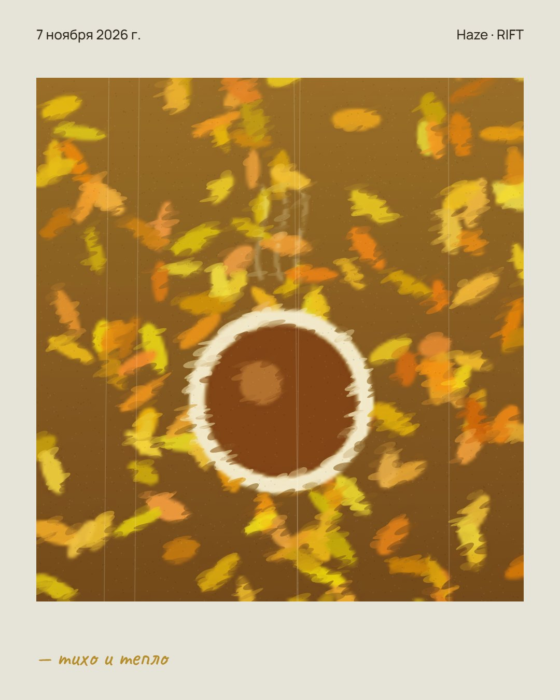
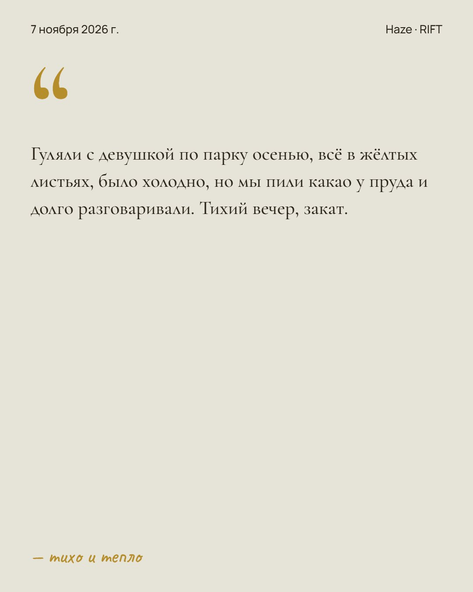
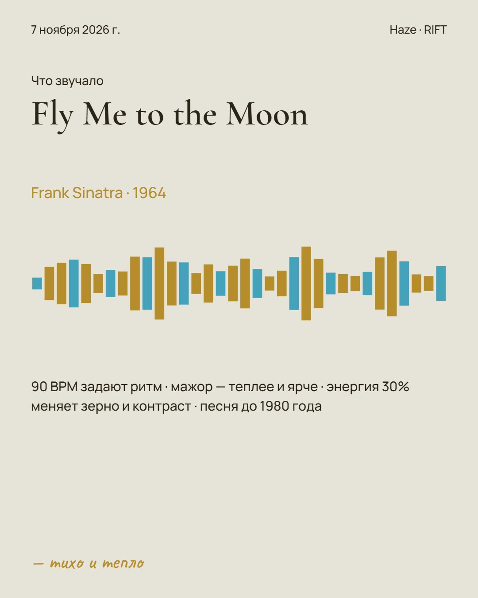

Вечер осенью в парке с девушкой
7 ноября 2026 г.




Гуляли с девушкой по парку осенью, всё в жёлтых листьях, было холодно, но мы пили какао у пруда и долго разговаривали. Тихий вечер, закат.
Fly Me to the Moon Frank Sinatra